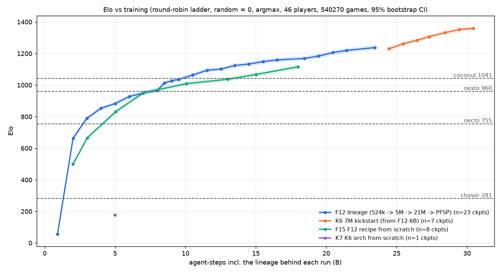
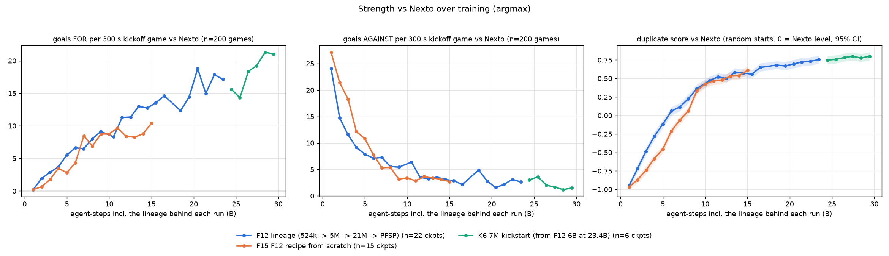

Replay viewer
Recorded bot games, played back as positions only (no policy runs in your browser). Blue is Terminal and attacks the goal at the far end of the default view. Drag to look around, scroll or pinch to zoom.
Terminal 0 - 0 Nexto
0:00.0
Loading 3-D viewer…
Free camera: drag to look, mouse wheel / pinch to move, W A S D Q E on a keyboard.
Gallery
3-D clips rendered with BeautifulVis (car and arena models by ZealanL).
Results
Goals for / against per 5-minute game, greedy (argmax) play, in our simulator.
| Mode | Opponent | Goals for / against | Games |
|---|---|---|---|
| 1v1 | Nexto | 23.8 / 1.0 | 200 |
| 1v1 | Wisp v2 (earlier K6 checkpoint) | 11.0 / 4.4 | 64 |
| 2v2 | Nexto | 6.3 / 0.8 (98% wins) | 128 |
| 2v2 | Wisp | 5.0 / 1.2 (91% wins) | 64 |
| 3v3 | Nexto | 4.7 / 0.2 (98% wins) | 128 |
| 3v3 | ChadGPT | 6.1 / 1.8 (94% wins) | 128 |
| 3v3 | Wisp | 5.2 / 0.7 (97% wins) | 64 |
Elo from a round-robin ladder (a random policy = 0): Nexto 960, Coconut 1041, best Terminal checkpoint 1359.
All numbers are from simulation (RocketSim), not the real game.

